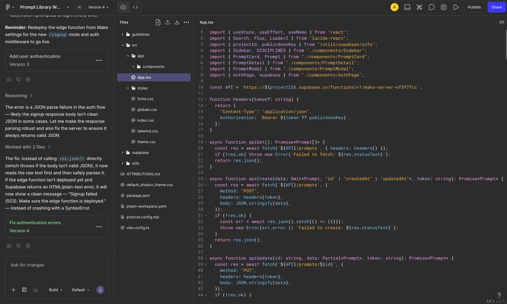

A prompt library that lives where I write, not in a tab I have to find.
I built it twice. The first one worked, but I had to go looking for it. The second one is already waiting on my Mac, on my phone and inside Claude Code.
2026, built twice
Shared prompts, all in one shape
WCAG 2.2 AA, no sign-in, works offline
Solo: design, build and the prompt writing
Good prompts kept getting lost, and nobody wrote them the same way.
A prompt that worked great one week was buried in a chat the next. I rewrote it from memory and got a weaker answer. Now picture a whole team doing that, every day.
A clear prompt gets a useful answer. A vague one gets a guess.
So I gave every prompt the same five parts.
Think of it like putting on a play. The Role is the costume. The Task is what the character does today. Without those two, the AI is standing on an empty stage. The other three are props.
You are a UX researcher mapping a problem into concrete, observable user behaviours.
Break the problem into observable user behaviours. For each one: what triggers it, what the user is trying to understand, what they rely on in [surface: the transaction list], and what workaround they use instead.
Focus on behaviours such as checking status right after [key action: sending], coming back to check progress, and confirming arrival with the recipient. Then: [paste your problem statement or research notes]
Be specific about user actions, like “opens transfer”, not “checks status”. Avoid abstraction.
For each behaviour: its trigger, what the user wants to understand, where [surface: the list] falls short, and the workaround.
The shape stops me writing wishes and gets me writing scenes.
Many prompts started life inside one finance project, so I turned them into templates. The words stay the same, but the project-specific parts sit in [square brackets] with my original as the example. The app highlights them, so you can see at a glance what to swap before you copy.
Version 1 worked. It just lived in the wrong place.
I built it in Figma Make during Memorisely’s AI Design course. I even wrote the app itself as prompts in the same five-part shape:
- prompt 1 · the appEvery screen and interaction.
- prompt 2 · storageSave prompts in Supabase. Nothing more.
- prompt 3 · sign-inA simple email login for the team.

Then I used it every day, and saw the catch. I don’t write prompts in a browser tab. I write them in Claude Code. So every prompt cost me a little trip:
- Leave my work
- Find the site and log in
- Copy the prompt
- Switch back and paste
And again, for every single prompt. Online only.
So I rebuilt it to come to me.
Prompts are just text. They don’t need a database. They need to be close by.
I rebuilt it in Claude Code with one rule: all the prompts live in one file, and everything else reads from that file. Here’s what changed:
Every prompt, in the same five parts.
Installs like an app. Works without wifi.
The same page, thumb-first.
/ux-research/writing/design-systems/prototyping/design-engineeringA small script turns the same file into Claude Code commands. I edit once, and everything stays in step.
No database, so no login
With nothing left to lock away, the login went too. No ties to Figma Make or Supabase.
Works offline
A prompt is most useful the moment you need it, connected or not.
Sync only if you ask
A private Gist keeps Mac and phone in step. The key never leaves your browser.
What the phone recording shows
It starts on the home screen, where the library sits as an app icon. The synthesis tag narrows the list, a search for “interview” finds prompts across rooms, one opens, and Copy Prompt shows a “Copied” check. Then Add Prompt opens a form with Required tags.
No login wall, on purpose.
A login is the first wall a new designer meets on day one. A page that only works with a mouse is another. I took both walls away.
- Works without a mouseEvery action works from the keyboard. Dialogs keep focus inside and close with Escape.
- Easy to read in sunlightDark text on light backgrounds. Tags put dark text on soft colours, so nothing fades.
- No sign-in, no trackingNo cookie banner, no analytics. A new teammate on a slow connection gets the same library.
No dashboards yet. Just a tool I reach for every day.
I’m still its main user, so it gets better wherever it gets in my way. From the changelog:
a11yRequired, in words. A red star became a “Required” tag. A screen reader says it, and it doesn’t depend on colour.fixThumb-first on the phone. The buttons used to run off the screen. Now Copy, the thing you came for, sits full width on top.
Build where the work happens
Version 1 was a good app in the wrong place. The rebuild paid off the day the prompts showed up inside Claude Code.
Match the tools to the content
Text never needed a database. Taking it out also took away the login, and I lost nothing I used.
A strict format pays off later
Every prompt has the same five parts. That’s why one small script could turn the library into Claude Code commands.
Next: a design team uses it for real. Then I’ll watch how fast people get a first useful answer, which prompts get copied, and which ones nobody opens. That decides what the library keeps.